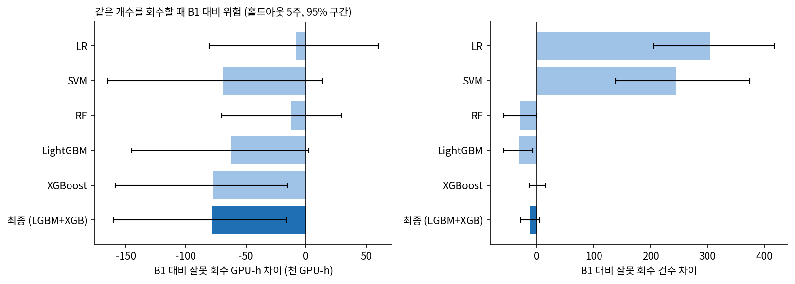
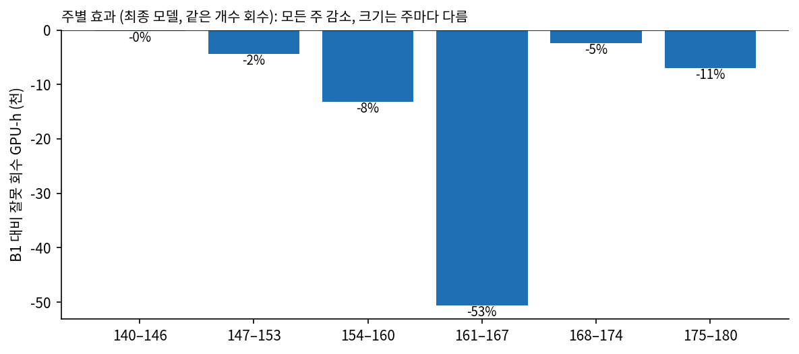
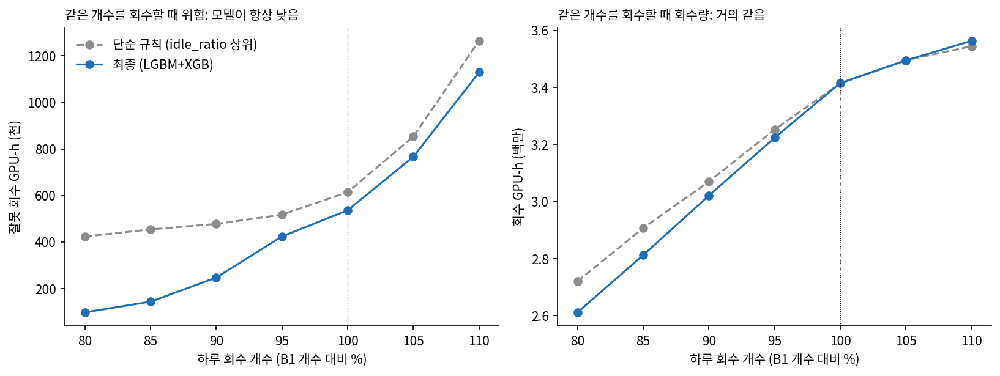
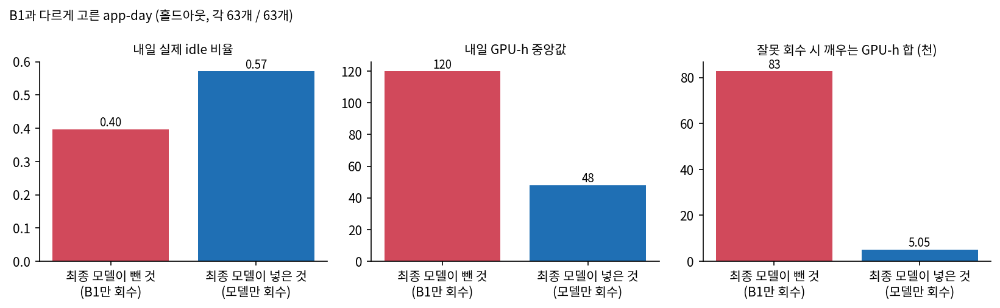
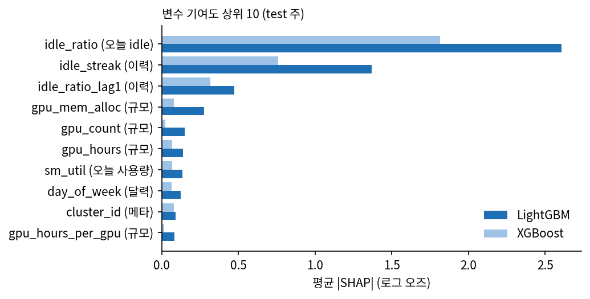
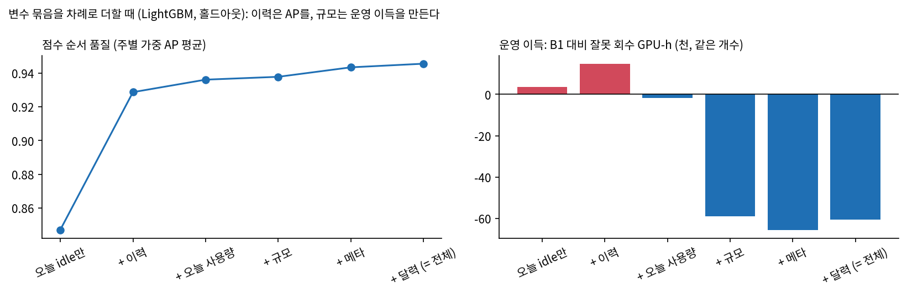
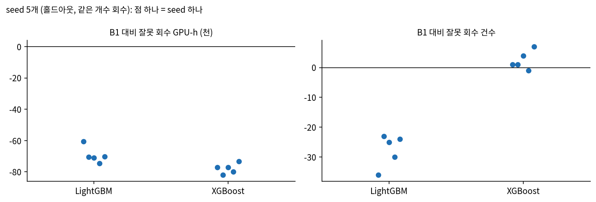
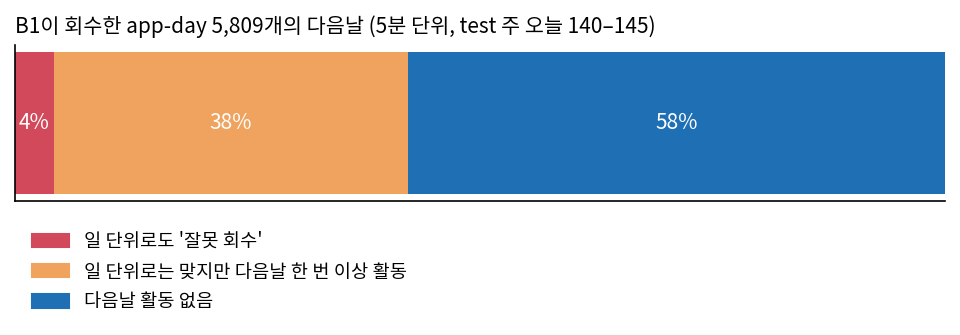

프로젝트: Predicting Tomorrow's Idle GPUs (Alibaba MaaS trace v2026)
작성: 2026-11-24 · 수치 출처: 최종 노트북 실행본(오류 0) + v4 견고성 실험
이 문서만 보고 누구나 발표 슬라이드를 만들 수 있게 썼다.
figures/, 그림과 표의 원본값은 data/(CSV, 엑셀에서 바로 열림)에 있다.reports/slide_report/
README.md ← 이 문서
figures/ ← 슬라이드에 바로 붙일 그림 (PNG, 한글)
data/ ← 그림·표의 원본값 (CSV, UTF-8 BOM) + numbers.json
| 용어 | 뜻 |
|---|---|
| app-day | app 하나의 하루. 분석 단위 |
| 내일 idle | 내일 그 app의 GPU가 일하지 않은 시간 비율이 90% 이상 (20초 관측 기준) |
| 회수 | 오늘 밤 그 app의 GPU를 거둬들여 내일 다른 곳에 쓰는 것 |
| 회수 GPU-h | 회수했고 실제로 내일 idle이었던 app의 내일 GPU-h. 클수록 좋음 |
| 잘못 회수 (건수) | 회수했는데 내일 idle이 아니었던 app-day 수. cold start 사건 수에 해당 |
| 잘못 회수 GPU-h | 잘못 회수한 app이 내일 쓴 GPU-h. 방해받은 서비스 규모. 작을수록 좋음 |
| Baseline 1 (B1) | "오늘 거의 idle이면 내일 회수"하는 단순 규칙. 운영자가 바로 쓸 수 있는 기준 |
| 단순 규칙 (idle_ratio 상위) | 오늘 idle 비율이 높은 순으로 원하는 개수만큼 회수. B1을 개수 조절이 가능하게 만든 것 |
| 같은 개수 정책 | 매일 B1이 회수하는 개수만큼(또는 그 비율만큼) 모델 점수 상위를 회수. threshold도 정답도 필요 없음 |
| 홀드아웃 | day 147–180(5주). 모델 개발에 전혀 쓰지 않은 기간. 주 결과는 이 구간 기준 |
| 95% 구간 | app을 복원 추출한 부트스트랩 2,000회의 2.5–97.5% 범위. 구간이 0을 넘지 않으면 "유의" |
"오늘 idle이면 회수"라는 단순 규칙이 이미 강하다. 모델이 회수량을 늘리지는 못한다. 대신 같은 개수를 회수할 때 언제나 덜 위험한 app을 고른다. B1과 같은 개수에서는 잘못 회수 GPU-h가 −13%다. 조금 보수적으로(B1의 90%) 운영하면, 같은 개수의 단순 규칙보다 회수는 1.6%만 줄고 잘못 회수 GPU-h는 −48%, 잘못 회수 건수는 −20%다.
| # | 숫자 | 의미 | 출처 |
|---|---|---|---|
| 1 | 90% | B1이 내일 idle GPU-h의 90%를 회수 (recall 0.899) | data/04 |
| 2 | 42% | B1이 회수한 app-day 중 다음날 한 번이라도 활동한 비율 (5분 단위) | data/16 |
| 3 | −12.6% | 같은 개수에서 최종 모델의 잘못 회수 GPU-h (B1 대비, 유의) | data/04, data/05 |
| 4 | +0.009 | 같은 개수에서 F1 향상 (0.873 → 0.882, 유의) | data/05 |
| 5 | −48% | 90% 운영 시 같은 개수의 단순 규칙 대비 잘못 회수 GPU-h (유의) | data/07 |
| 6 | 주당 70만 GPU-h | B1 규칙의 주당 회수량. GPU 약 4,200장을 일주일 비우는 양 | data/19 |
핵심 메시지: LLM 추론 서비스는 요청이 없어도 GPU를 붙잡아 둔다. 놀고 있는 GPU를 회수하면 비용을 줄이지만, 잘못 회수하면 cold start가 생긴다.
핵심 메시지: 원시 운영 로그를 직접 집계하고 결합해서 분석용 데이터셋을 만들었다. 잘 정리된 데이터셋을 그대로 쓰지 않았다.
| 원시 표 | 규모 | 쓴 곳 |
|---|---|---|
| instance_daily | 1.45억 행, day 0–181 | 라벨과 입력 변수 전부 |
| instance_week_5min | 1.41억 행, day 140–146 | 실제 cold start 확인 (5분 단위 시뮬레이션) |
| app_metrics | 7,401행 | (메타데이터 참고) |
data/01_dataset_splits.csv)핵심 메시지: 분류 문제로 정의하되, 큰 app의 실수가 더 크게 반영되도록 GPU-h로 가중한다.
| 항목 | 정의 |
|---|---|
| 결정 시점 | day t가 끝날 때 → day t+1에 회수할 app 결정 |
| 단위 | app × day |
| target | 내일 idle (내일 idle 비율 ≥ 0.9) |
| 가중치 | 내일 GPU-h (gpu_hours_next) — 학습과 평가 모두 |
| 입력 변수 | 23개, 6묶음: 오늘 idle(1), 이력(2), 오늘 사용량(6), 규모(5), 메타(8), 달력(1) |
data/01_dataset_splits.csv — 내일 idle 비율은 건수로 35.7%, GPU-h로는 8.4%. 큰 app일수록 잘 쉬지 않는다는 뜻이다.핵심 메시지: 운영과 똑같이, 과거로 학습해서 다음 주를 예측하고, 같은 조건에서 비교한다.
day ≤ 주 시작 − 2로 학습한다.핵심 메시지: 오늘 idle인 app은 내일도 idle일 확률이 96%다. 그래서 단순 규칙만으로도 idle GPU-h의 90%를 회수한다.
data/02_state_transition_holdout.csv, 홀드아웃):| 오늘 → 내일 | 행 비율 | 내일 GPU-h 비율 |
|---|---|---|
| busy → busy | 64.4% | 90.3% |
| idle → idle | 32.3% | 7.5% |
| busy → idle | 1.8% | 0.8% |
| idle → busy | 1.5% | 1.4% |
핵심 메시지: 같은 개수를 회수할 때, 부스팅 모델만 B1보다 덜 위험하다. 선형 모델과 SVM은 오히려 나쁘다.
figures/fig04_model_comparison_ci.png
data/04_model_comparison_main_policy.csv, 홀드아웃, 같은 개수):| 방법 | F1 | 잘못 회수 GPU-h (B1 대비) | 잘못 회수 건수 (B1 대비) | 회수 GPU-h (B1 대비) |
|---|---|---|---|---|
| Baseline 1 | 0.873 | 614,491 | 1,453 | 3,414,183 |
| Baseline 2 (sm_util 하위 N) | 0.638 | +1,456,496 | +8,417 | −665,986 |
| Logistic Regression | 0.864 | −8,889 | +305 | −68,636 |
| SVM | 0.868 | −69,739 | +243 | −87,603 |
| Random Forest | 0.875 | −12,208 | −30 | +4,373 |
| LightGBM | 0.879 | −61,784 | −32 | −2,252 |
| XGBoost | 0.881 | −77,139 | +1 | −958 |
| 최종 (LGBM+XGB 평균) | 0.882 | −77,687 | −11 | +1,300 |
data/05_bootstrap_ci.csv).핵심 메시지: 최종 모델은 B1과 같은 양을 회수하면서, 잘못 회수로 깨우는 작업을 12.6% 줄인다.
data/05_bootstrap_ci.csv):| 지표 | B1 | 최종 모델 | 차이 [95% 구간] | 판정 |
|---|---|---|---|---|
| 회수 GPU-h | 3,414,183 | 3,415,483 | +1,372 [−9,260, +17,360] | 같음 |
| 잘못 회수 GPU-h | 614,491 | 536,803 | −78,050 [−160,400, −16,410] | 유의하게 감소 (−12.6%) |
| 잘못 회수 건수 | 1,453 | 1,442 | −11 [−28, +5] | 차이 없음 |
| F1 | 0.873 | 0.882 | +0.009 [+0.002, +0.018] | 유의하게 증가 |
figures/fig09_weekly_effect.png — 6주 모두 감소했지만 크기는 주마다 다르다(data/09).
data/08).핵심 메시지: 같은 개수를 회수하면 모델은 항상 단순 규칙보다 덜 위험하다. 특히 B1보다 조금 덜 회수하는 구간에서 차이가 크다.
figures/fig06_count_ratio_curve.png. 왼쪽은 위험, 오른쪽은 회수량이다. 가로축은 하루 회수 개수(B1 대비 %)다.
data/07_count_ratio_bootstrap_holdout.csv, 홀드아웃, 최종 모델 대 같은 비율의 단순 규칙):| 하루 회수 개수 | 회수 GPU-h 차이 | 잘못 회수 GPU-h 차이 | 잘못 회수 건수 차이 | F1 차이 |
|---|---|---|---|---|
| 85% | −94,726 (−3.3%) | −308,304 (−68%) | −198 | +0.020 (유의 아님) |
| 90% | −49,401 (−1.6%) | −229,076 (−48%) | −156 (−20%) | +0.019 |
| 95% | −29,176 (유의 아님) | −94,071 (−18%) | −88 | +0.006 (유의 아님) |
| 100% | +1,372 (유의 아님) | −78,046 (−13%) | −11 (유의 아님) | +0.009 |
data/08). 100%일 때(61개, 88%)보다 고르게 퍼져 있다.핵심 메시지: 모델은 "내일 깨어날 큰 app"을 빼고 "작은 idle app"을 넣는다.
figures/fig10_swap.png (data/10_swap_holdout.csv). 홀드아웃에서 B1과 서로 다르게 고른 app-day는 각각 63개다.
| 모델이 뺀 것 (B1만 회수) | 모델이 넣은 것 (모델만 회수) | |
|---|---|---|
| 내일 실제 idle 비율 | 40% | 57% |
| 내일 GPU-h 중앙값 | 120 | 48 |
| 잘못 회수 시 깨우는 GPU-h 합 | 82,735 | 5,048 |
| offline 비율 | 38% | 21% |
핵심 메시지: 모델은 주로 "오늘과 최근의 idle 이력"을 본다. 하지만 운영 이득은 '규모' 변수에서 나온다.
figures/fig11_shap.png — 변수 기여도 상위 10 (data/11, data/12)
figures/fig13_feature_groups.png — 변수 묶음을 차례로 더할 때 (data/13, v4 E3, LightGBM, 홀드아웃)
핵심 메시지: seed를 바꿔도, 학습 기간을 바꿔도 결론은 같다.
figures/fig14_seeds.png (data/14_seeds_v4.csv). 홀드아웃, 같은 개수, seed 5개.
data/15_train_window_v4.csv): 전체 과거, 최근 56일, 최근 28일의 AP가 0.9455, 0.9475, 0.9458로 차이가 없다. 최근 데이터만 쓸 이유(분포 변화)가 없다.data/17_workload_holdout.csv): offline은 행의 8.6%뿐인데 잘못 회수 GPU-h 감소의 65%(−50.1k)가 offline에서 나왔다. offline F1은 +0.019, online은 +0.005다.핵심 메시지: 회수 규칙은 주당 GPU 약 4,200장 분량을 비운다. 모델은 이 양을 유지하면서 위험을 줄이거나, 조금 양보하고 위험을 크게 줄이는 선택지를 준다.
data/19_value_per_week_by_operating_point.csv, 홀드아웃 34일을 주당으로 환산):| 주당 | B1 (지금) | 최종 모델 (100%) | 최종 모델 (90%) |
|---|---|---|---|
| 회수 GPU-h | 702,920 | 703,188 | 622,002 |
| GPU 대수 환산 (÷168시간) | 4,184장 | 4,186장 | 3,702장 |
| 잘못 회수로 깨우는 GPU-h | 126,513 | 110,518 (−12.6%) | 50,998 (−60%) |
| 잘못 회수 건수 | 299 | 297 | 128 (−57%) |
핵심 메시지: 하루 단위 라벨로는 cold start를 다 잡을 수 없다.
figures/fig16_coldstart_5min.png (data/16_sim_5min_test.csv, test 주 오늘 140–145)
| 제안서 | 최종 | 이유 |
|---|---|---|
| (instance, day) 단위 | (app, day) 단위 | offline 인스턴스는 대부분 하루만 살아서, 인스턴스 단위로는 다음날 라벨이 생기지 않음 |
| 라벨 기준 τ를 val에서 조정 | τ = 0.9 고정 | "거의 idle"을 해석하기 쉬운 기준으로 고정하고 모델 비교에 집중 |
| 성공 = 같은 위험에서 더 많이 회수 | 같은 개수에서 덜 위험하게 회수 | 정답을 알아도 더 회수할 여지가 +1.3%뿐(v4 E1). 이 사실 자체가 발견 |
| test 1주로 평가 | test 주 + 홀드아웃 5주 walk-forward | 1주 결과는 흔들림(test 주에서는 모든 모델 ≈ B1) |
data/20_v2_test_week_reference.csv. v2는 test 1주에서 LightGBM이 잘못 회수 GPU-h −49%, F1 +0.016이었다.data/05_bootstrap_ci.csv의 위험 맞춤 GPU-h (직전 주)(홀드아웃, 최종 모델):| 질문 | 답 |
|---|---|
| test 주에서 모델이 B1과 같은데 왜 좋다고 하나? | test 1주는 변화가 적은 주다. 6주 walk-forward와 홀드아웃 5주에서 일관되게(6주 모두 감소) 나타났고, 부트스트랩 구간이 0을 넘지 않는다 |
| 이득이 큰 app 몇 개 덕분 아닌가? | 맞다(100%에서 상위 5개 88%). GPU-h 기준으로는 큰 app 하나의 cold start가 작은 app 수백 개보다 크기 때문에, 그걸 피하는 것이 운영상 의미 있다. 90% 운영에서는 282개 app에 퍼져 있다 |
| 더 복잡한 모델이면 회수량이 늘지 않나? | 정답을 보고 맞춰도 +1.3%가 상한이다. 문제의 성격상 한계다 |
| 왜 τ=0.9인가? | "거의 idle"의 직관적 기준. τ를 바꾸면 라벨 자체가 바뀌므로 비교를 위해 고정했다 |
| cold start 비용을 직접 재지 않았나? | 5분 단위 시뮬레이션으로 건수와 첫 활동 시각을 셌다. 다만 5분 데이터가 test 1주뿐이라 홀드아웃 효과는 일 단위로만 확인했다 |
| 가중치 없이 학습하면? | 모든 모델이 내일 GPU-h 가중치로 학습했다. 목표 지표가 GPU-h이기 때문이다 |
figures/)| 파일 | 슬라이드 | 내용 |
|---|---|---|
| fig04_model_comparison_ci.png | S7 | 모델별 B1 대비 잘못 회수 GPU-h·건수, 95% 구간 |
| fig06_count_ratio_curve.png | S9 | 회수 개수 비율별 위험·회수량 곡선 (단순 규칙 대 최종) |
| fig09_weekly_effect.png | S8 | 주별 잘못 회수 GPU-h 변화 |
| fig10_swap.png | S10 | 모델이 뺀 것과 넣은 것 비교 |
| fig11_shap.png | S11 | 변수 기여도 상위 10 |
| fig13_feature_groups.png | S11 | 변수 묶음을 더할 때 AP와 운영 이득 |
| fig14_seeds.png | S12 | seed 5개 결과 |
| fig16_coldstart_5min.png | S14 | 회수한 app의 다음날 (5분 단위) |
data/)| 파일 | 내용 |
|---|---|
| 01_dataset_splits.csv | 구간별 행·app 수, 내일 idle 비율 |
| 02_state_transition_holdout.csv | 오늘→내일 상태 전이 (홀드아웃) |
| 03_model_comparison_all.csv | 모든 방법 × 정책 × 구간 결과 |
| 04_model_comparison_main_policy.csv | 주 정책(같은 개수) 결과 |
| 05_bootstrap_ci.csv | 부트스트랩 95% 구간과 판정 |
| 06_count_ratio_curve.csv | 회수 개수 비율 80–110% 곡선 원본 |
| 07_count_ratio_bootstrap_holdout.csv | 비율별 부트스트랩 (대 B1, 대 단순 규칙) |
| 08_concentration_holdout.csv | 이득의 app 집중도 |
| 09_weekly_final_samecount.csv | 주별 결과 (최종 모델) |
| 10_swap_holdout.csv | B1과 다르게 고른 app-day 특징 |
| 11_shap_feature.csv / 12_shap_group.csv | SHAP 변수별·묶음별 |
| 13_feature_group_ablation_v4.csv | 변수 묶음 더하기/빼기 (v4) |
| 14_seeds_v4.csv | seed 5개 (v4) |
| 15_train_window_v4.csv | 학습 기간 (v4) |
| 16_sim_5min_test.csv | 5분 단위 시뮬레이션 |
| 17_workload_holdout.csv | online/offline별 |
| 18_value_per_week.csv / 19_value_per_week_by_operating_point.csv | 주당 환산 가치 |
| 20_v2_test_week_reference.csv | 팀원 v2 노트북 test 주 결과 |
| numbers.json | 본문에 쓴 주요 숫자 |
| 산출물 | 위치 |
|---|---|
| 최종 노트북 | notebooks/2026_maas_analysis_final.executed.ipynb (생성기 scripts/make_final_notebook.py, 실행 scripts/run_final.sh) |
| 견고성 실험 (seed, 변수 묶음, 학습 기간) | notebooks/2026_maas_analysis_v4_robust.executed.ipynb |
| 튜닝 | notebooks/2026_maas_analysis_v3_gpu.executed.ipynb |
이 보고서의 그림과 표를 다시 만드는 명령:
env-gpu/bin/python scripts/make_slide_report.py